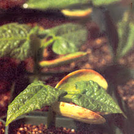
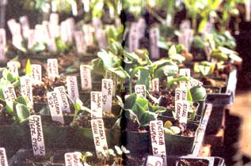
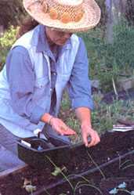
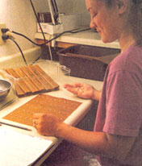
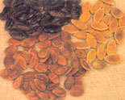
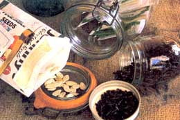
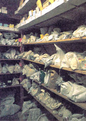

A Seed's Life
by Kris Wetherbee
October/November 2000
Good beginnings can equal a great garden
These lima bean seeds pop out of the soil with vigor and promise.
I'll never forget the year I ordered seeds for a new variety of yellow tomato. Having never tasted a tomato that wasn't red, I looked forward with mouth-watering anticipation to plucking the first ripe fruit from the vine. That summer brought the perfect sun for growing tomatoes just bursting with flavor. Sure enough, by early August my plants were covered with green fruit, all beginning to turn a vibrant shade of ...red!
Seeds are tested for viability against government standards. These flats are labeled to prevent any misidentifications.
Sound familiar? Unfortunately, seeds don't always produce what their packets promise. And while the discrepancy may be less blatant than alternately colored produce, the results may be no less disap pointing: plants that quit before they get started; entire packets of seed that refuse to germinate; a vegetable touted as disease-resistant that nevertheless succumbs to a devastating blight; a tried-and-true varietal that fails to perform as it had in years past.
Though it's tempting in the face of such flops to hang up your garden gloves, take heart: It may not be your fault. That seed likely passed through many hands before it reached yours, with any number of factors affecting its viability and vitality along the way.
Mark each true or false
Before we take you on a journey into the life of a seed, take this quick quiz to see how seed-savvy you already are. You'll find the answers throughout the article. so when you finish here, read on.
Life Expectancies
Okay, so our quiz begins with a trick question. The answer to #1 is neither true nor false, but rather "it depends." A seed's life span can range from six months to more than ten years, depending on how the seed stock was grown (seed saved from poor-quality stock generally won't live as long) and under what conditions it was stored.
Also, certain types of seed just don't live as long as others. Leek and onion seeds are notoriously short-lived, even when stored under the best of conditions. Their life spans range from under six months to maybe two years, if you're lucky. On the other hand, I've seen tomato, pepper, sunflower and bean seeds that have remained viable even after ten years.
And even within a seed type there will be some varieties that naturally outlive others. The usual life expectancy for cauliflower seed, for instance, averages three to four years. Yet, White Rock cauliflower - while a personal favorite for its dependability, earliness, yield and tremendous flavor - seems to lose viability after just one year.
How Old is Your New Seed?
The author plants viable seeds in one of her raised-bed gardens.
If you answered false to question #2, give yourself a point. The reality is, seed packets sold this year may contain seed that is several years old! That date you'll find stamped on the packet is what's known as a "packed for" date and indicates merely the year in which the seed was packaged for sale. There's no telling when it was actually grown, or when the last germination test was run (see "Germination Standards and Tests" below). That said, as long as the seed was stored properly and wasn't approaching a significant loss in viability by the time it was packaged, it should be fine at least through the year marked. And if you get good germination results the first time you plant, chances are you can save any leftover seed for the following year and see at least average results, assuming you're not dealing with short- lived seed such as onion, leek, spinach or beet. But if your initial results are less than inspiring, I wouldn't count on the seed lasting another season, even under ideal storage conditions.
Germination Standards and Tests
Add another point to your score if you answered false to question #3. A germination test determines what percentage of seeds will germinate (remain viable) in any given batch.
A seed that's viable has the ability to sprout and begin its growth from seedling to mature plant.
The federal government sets minimum germination standards for vegetable seed, though these vary from plant to plant. For example, 75% of corn seed must germinate in order for it to be packaged for sale. Compare this with peppers and celery, which require germination rates of only 55%. (Give yourself another point if you answered true to question #4.) Seed that doesn't meet federal standards may still be sold as long as it's marked "below standard," but this is rarely done. I have never come across seed labeled in this way, not even among the ten-for-a-dollar packs I've purchased off the bargain racks (yes, I give in to these impulse buys on occasion!). I'm aware of a few mail-order companies that simply donate any of their seed that falls below standard. Still, I suppose particularly when you buy cheap seed, the possibility exists that you could be buying substandard seed.
An employee at Territorial Seed Co. conducts a germination test to determine seed viability.
Be aware, too, that while Uncle Sam sets germination standards for vegetables, testing requirements are left to the states and can differ greatly from one to the next. Several states require germination tests every six months. Most call for tests about every nine months, while a few only require testing every 18 months.
Also, tested seed need not be packaged immediately. Department of Agriculture guidelines demand only that seed be packaged within 18 months of germination testing if it is to be sold wholesale, and within 36 months if it is to be sold retail.
What does all of this mean to you, the home gardener? Simply this: Even if seed meets federal germination standards, by the time it's packaged, purchased and planted in the ground, its viability may be reduced to zero, particularly if it was handled poorly or stored improperly following its last germination test, or if the seed was by then already nearing the end of its life.
Each seed has its own characteristic beauty, as shown by this colorful trio.
Such was the case with the onion seed I purchased many years ago from a new seed company. After planting large quantities of several varieties for our mar ket business, I watched as not one of the seeds germinated. The company did run germination tests once a year. But my order was placed in December and the seed I received had been packaged for that year, which meant it could have been packaged up to 11 months earlier - with germination tests done as much as a year before that. By the time I used the seed the following March, over two years may well have passed since it was last shown to be viable. Plus, the seed may already have been one or two years old before it was tested. No wonder none of the onions germinated!
By the way, add another point for yourself if you answered true for question #5. Flower seeds are exempt from federal germination standards and are regulated (loosely, if at all) by the states.
SELECTED SEED SUPPLIERS
There are many good seed companies out there, and by no means is this list all-inclusive. Following are simply a few seed suppliers that I've dealt with and have found to be quite reliable.
FEDCO SEEDS
PO Box 520 Waterville, ME 04903-0520 (207)873-7333
JOHNNY'S SELECTED SEEDS
Foss Hill Road Albion, ME 04910 (207)437-4395
www.johnnyseeds.com
PARK SEED CO.
1 Parkton Ave. Greenwood, SC 29647-0001
(800)845-3369
www.parkseed.com
PINETREE GARDEN SEEDS
Box 300 New Gloucester, ME 04260 (207) 926-3400 www.superseeds.com
SEED SAVERS EXCHANGE
3076 North Winn Road Decorah, IA 52101 (319)382-5990 www.seedsavers.org
TERRITORIAL SEED COMPANY
PO Box 157 Cottage Grove, OR 97424-0061 (541)942-9547 www.territorial-seed.com
TOTALLY TOMATOES
PO Box 1626 Augusta, GA 309031626 (803)663-0016 www.totallytomato.com
The Business of Seeds
Give yourself another point if you answered false to question #C. It's a safe bet that no home garden seed company grows all of its own seed - it's just not economically feasible. In fact, very few grow any of their own seed. There are exceptions: Territorial Seed Company in Oregon grows about 12% of its seeds; it also conducts cooperative trials with extension services across the country. Johnny's Selected Seeds, which mails out about 1.7 million seed packets each year, grows around 20% of its vegetable seed stock. (For information on these and other seed companies, please see " Selected Seed Suppliers ")
But by far the majority of seed is grown not by your local or mail-order seed company, but by breeders growing their own introductions or, more often, by contract growers who sell to a handful of major worldwide seed distributors, who in turn supply the retailers. The seed you buy could have been grown anywhere in the world, from your own neighborhood to fields halfway around the globe.
The end result is that the quality of a specific variety of seed, such as Brandywine tomato, can differ from one seed company to the next, depending on where, how and by whom it was grown. (Add another point to your score if you answered false to question #7,) Quality can also vary from one packet to the next, as certain strains of a variety may produce a higher grade of seed than others.
Making The Grade
Seed is graded for not only germination standards, but also size and density. "We don't want small cole crop seeds, because the seedlings tend to be less vigorous," says Joel Reiten, farm and research manager for Territorial Seed Company. When Territorial buys from wholesalers, says Reiten, it only buys larger seed - 10% to 20% above federal germination standards. It's this kind of selectiveness, common among many big mail-order retailers, that sends the lighter, smaller seed to the bargain racks - and many gardeners scurrying to their mailboxes for the latest seed catalogs. "Critical gardeners are more likely to buy their seeds by mail-order," notes Rob Johnston Jr., founder and chairman of Johnny's Selected Seeds.
Glass jar with airtight, clamp-down lids are best for long term seed storage.
That's not to say that quality seed can never be found at seed racks (which is good news, since rack sales account for a whopping 50% to 80% of seeds purchased by home gardeners). But, cautions Johnston, "you're not going to get the adaptability from a seed packet at awed rack unless you have a local company that knows what it's doing."
Seed Trials and Test Gardens
Few seed companies conduct trials for every seed they sell, so score another point if you answered false to question #8. Instead of conducting their own trials, many seed companies rely on performance data provided by the wholesale seed suppliers. Trouble is, this performance data tends to be regionally specific, since 50% to 75% of the trials are run in California. Perhaps that's why I've seen melon varieties for sale at local seed racks that neither would nor could ever perform well in the Pacific Northwest where I garden. While California may be an ideal climate in which to grow most vegetables, it's hardly an accurate simulation of every gardener's backyard.
Increase your odds for a great gardening year by buying from a seed company that's involved in continuous trial programs, from its own test gardens to cooperative trials with testers across the country. This will also help prevent seed mix-ups (remember the yellow tomato that turned red?). While this doesn't happen often, it does happen. A company that tests a variety will catch any seeds misidentified by the grower.
This climate-controlled seed storage facility is kept at 50°F and 50% humidity.
The Ins and Outs of Seed Storage
Seeds need to be properly handled if they are to remain viable. It wouldn't take long for seed exposed to high temperatures or high humidity to lose the ability to germinate. Never leave seed packets in the sun while you're planting, and don't let them get wet.
Always be sure to store your seed in a cool, dry place. A good rule of thumb is to keep the combined humidity and temperature below 100. The ideal environment will have a 40°F to 45°F temperature, with a humidity reading of 45% to 50%. When the combined number goes above 100, the life expectancy and vigor of your seed can plummet.
Chalk up another point if you said false to question #9. For home storage, the refrigerator or freezer is a great way to go. Some experts believe that seed kept in cold storage will last ten times as long as packaged seed stored at room temperature. I would tend to agree. Seed we've stored in the freezer always seems to outperform and outlive similar varieties stored at room temperature. I've been able to get an extra five years from many seeds this way.
A word of warning: The dehydrating action of today's frost-free refrigerators and freezers can really suck the moisture out of your seed. For best results, keep seed in an airtight, moisture-proof container, such as a glass jar with an airtight lid. Since plastic can still breathe even with an airtight lid, award yourself a final point if you answered false to question #10.
What You Can Do
Make it a point to always buy your seed from a reliable supplier. After all, if you're going to spend months toiling in the garden, you want the results to be more than just okay. You want to grow terrific tomatoes, marvelous melons, perfect peppers, and peas that will turn the neighbors green with envy.
The better seed catalogs will list how often germination tests are run, under what conditions seed is stored, and what trials (if any) were conducted. If it's not in the catalog, give the company a call.
A reliable seed company will usually conduct germination tests every six to 12 months, even if its state requires less. Park Seed, for example, runs germination tests on its vegetables every four months, Johnny's Selected Seeds tests vegetable, flower and herb seeds every five months, and Territorial Seed Company tests across the board every six months (see " Selected Seed Suppliers "). Also, companies concerned with keeping customers happy will often guarantee their seeds.
By the way, if you answered 50% of the questions correctly, consider yourself seed-savvy. If you answered less than 50% correctly, no problem. As we all know, when it comes to gardening, there are no absolutes; you can always go back and take the test again. And remember, understanding the life of a seed can bring you a long way toward getting more life out of your seed.
Dig up information and tips on GARDENING, purchasing seed, planting techniques and storing your harvest. Log on to www.motherearthnews.com
|
 |
|
 |
 |
 |
 |
 |
 |
 |
 |
 |
 |
|
|
 |
 |
|
 |
 |
 |